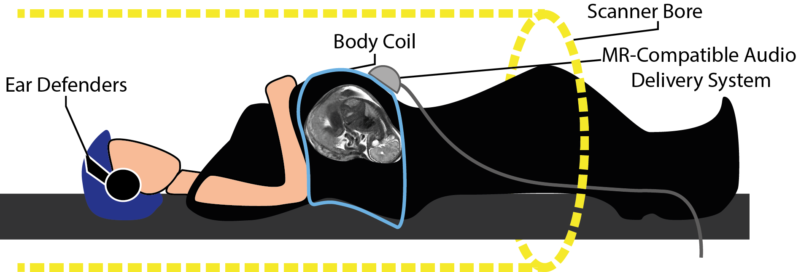

Last compiled: 2023-07-25
Exploring audio-motor integration: a novel approach to overcoming hearing impairment
Human speech perception is robust in the face of adverse listening conditions, such as reverberation and background noise. Hearing loss imposes perceptual difficulty in speech perception by degrading incoming speech signals. It is an increasingly common disability and has large societal costs. Recent neuroimaging work has suggested that one mechanism of restoration of a degraded speech signal is couched in articulatory-motor representations. This project seeks to investigate, using multiple different methods, the neural substrates of degraded speech perception, and specifically the role of articulatory-motor representations. In addition to enhancing our understanding of the neurobiology of language, this can be applied to the development of novel training methods to enable hearing-impaired individuals to enhance and exploit articulatory-auditory links to improve their speech comprehension abilities.
Publications
Houweling, T., Becker, R., & Hervais-Adelman, A. (2020). The noise-resilient brain: Resting-state oscillatory activity predicts words-in-noise recognition. Brain Lang, 202, 104727. doi:10.1016/j.bandl.2019.104727
Becker, R., & Hervais-Adelman, A. (2020). Resolving the Connectome, Spectrally-Specific Functional Connectivity Networks and Their Distinct Contributions to Behavior. eNeuro, 7(5), ENEURO.0101-0120.2020. doi:10.1523/eneuro.0101-20.2020>
Last compiled: 2023-07-25
Human Infants are born crying with an accent that reflects the pitch accent of the language of the environment in which they gestate.
This strand of research concerns itself with this from two perspectives:
In order to address these questions we are undertaking an SNF-funded investigation to examine the acoustic features of infants’ cries that make them more or less aversive or salient to potential caregivers and the in utero cerebral processes that underpin acquisition of early precursors of human speech.

Last compiled: 2023-07-25
Reduced speech comprehension ability is a major consequence of hearing impairments. Specially in acoustically challenging situations, difficulties in speech perception and comprehension can have major consequences for quality of life. The goal of this project is to gain knowledge into the cognitive and brain mechanisms involved in speech-in-noise comprehension. Ultimately, we search for novel insights to guide future aid technologies.
There are two related projects: